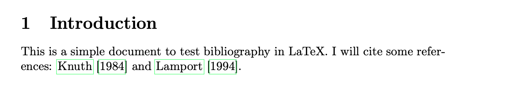
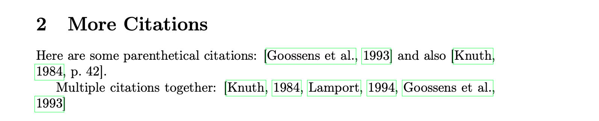
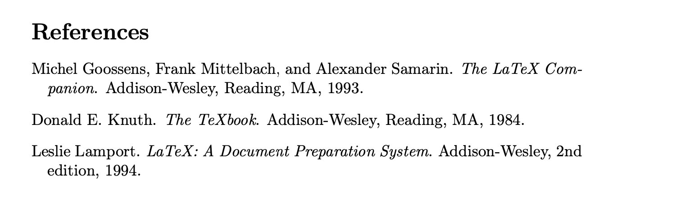

Изучение основ работы с библиографией в LaTeX:
lab06.tex - основной LaTeX документ с
цитированиямиreferences.bib - база данных библиографии@book{knuth1984, author = {Knuth, Donald E.}, title = {The TeXbook}, publisher = {Addison-Wesley}, year = {1984} }
@book{lamport1994, author = {Lamport, Leslie}, title = {LaTeX: A Document Preparation System}, publisher = {Addison-Wesley}, year = {1994} }
@book{goossens1993, author = {Goossens, Michel and Mittelbach, Frank and Samarin, Alexander}, title = {The LaTeX Companion}, publisher = {Addison-Wesley}, year = {1993} }
text
Для создания документа с библиографией требуется несколько шагов:
pdflatex lab06.tex - создает .aux файл с информацией о
цитированияхbibtex lab06 - читает .aux и .bib, создает .bbl
файлpdflatex lab06.tex (дважды) - включает библиографию и
разрешает ссылки


| Команда | Результат |
|---|---|
\citet{knuth1984} |
Текстовое цитирование: Knuth (1984) |
\citep{lamport1994} |
Цитирование в скобках: (Lamport, 1994) |
\citep[p.~42]{knuth1984} |
Цитирование с номером страницы: (Knuth, 1984, p. 42) |
\citep{knuth1984,lamport1994} |
Множественные цитирования: (Knuth, 1984; Lamport, 1994) |
\citet создает текстовые цитирования (автор как часть
предложения)\citep создает цитирования в скобках (автор в круглых
скобках)plainnat организует ссылки в алфавитном порядке
по авторуВ ходе лабораторной работы я научился(ась):
Система библиографии в LaTeX экономит время и обеспечивает единообразное форматирование ссылок.